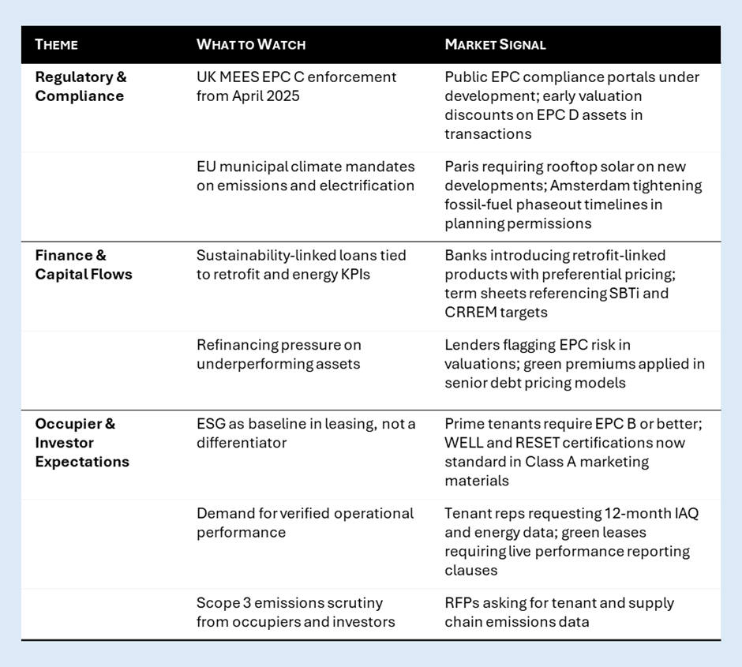

Year in Review: 2024
This year marked a decisive turning point for sustainability in commercial real estate. Across Europe, a combination of regulatory ambition, investor pressure, and occupier demand reshaped expectations around buildings and portfolios.
Where carbon performance and resilience were once seen as strategic advantages, they are now standard requirements. Decarbonization has moved from long-term planning into real-time execution. Owners, operators, and investors are being asked not just to prepare, but to deliver.
This Year in Review outlines the most important policy changes, capital market signals, and shifts in leasing and investment behaviour that defined 2024.
For a snapshot of the signals shaping 2025 strategy, see the 2025 Watch List below.
Regulation Reaches New Heights
In 2024, regulation became the leading force behind decarbonization across the built environment. The EU and the UK both introduced landmark changes that are already reshaping investment strategy and asset valuation.
The revised EU's Energy Performance of Buildings Directive (EPBD), which took effect in May, introduced the following key requirements [1]:
- Retrofit renovation of the worst-performing 16% of CRE buildings in EU member states by 2030
- Expansion of that requirement to 26% by 2033
- Zero-emission standards for all new public buildings by 2028
- Extension of the zero-emission requirement to all new buildings by 2030
In the UK, updated Minimum Energy Efficiency Standards (MEES) will require commercial properties to meet the following from April 2025 [2]:
- A minimum EPC rating of C
- Financial penalties for non-compliance of up to £150,000
Preparation for the EU Corporate Sustainability Reporting Directive (CSRD) also accelerated [3]. Throughout 2024, multinational CRE firms focused on baseline data collection to prepare for 2025 disclosure. CSRD will impose:
- Significant non-financial reporting requirements
- Disclosure obligations on ESG metrics and carbon performance
- Deeper integration of climate data into business models
In the US, the SEC finalised its Climate Disclosure Rule in March [4]. While focused on public companies and REITs, the rule reinforces the financial materiality of climate risk, and may influence transatlantic investment strategies.
Finance Aligns With Net-Zero
Capital markets in 2024 demonstrated strong alignment with net-zero goals. Investor appetite for sustainability-linked assets grew rapidly, and new financial instruments increasingly linked capital deployment to emissions performance.
Notable developments included:
- A global record of $671.7 billion in in green bond issuance, with European issuers dominating (euro-denominated making up 58% of total) [5]
- Europe’s largest listed developer, owner, and manager of industrial and logistics properties, CTP’s €750MM green bond, which was oversubscribed 5.5x [6]
- QIC Real Estate’s AUS$3.75B loan, tied to Scope 1, 2, and 3 emissions, using the Green Star Performance Tool v2 [7]
- Introduction of the EU Green Bond Regulation, aligning with the EU Taxonomy and promoting market standardisation starting in December [8]
- Increasing investor demand for physical climate risk data, including flood, wildfire, and heat stress exposure, now standard in due diligence and asset valuation [9]
Retrofit Awareness Evolves
The financial performance of green buildings is no longer hypothetical. In 2024, measurable data confirmed that sustainable assets generate value through both income and capital appreciation.
Key findings of the RICS 2024 Sustainability Report included [10]:
- 44% of respondents observed rental premiums for green buildings
- 31% respondents estimated green premiums up to 10%
- 13% of respondents reported premiums exceeding 10%
- Almost 50% reported price premiums on green building sales
- In New York City, portfolio-wide retrofit strategies expanded in preparation for Local Law 97, and carbon tracking systems became standard among Class A owners [11]
Strategic Shifts in Market Outlook
Across major conferences and industry reports, one theme became clear: sustainability has shifted from a differentiator to an expectation.
Interesting market signals from 2024 included:
- CBRE’s European Outlook found that ESG performance is now a leasing baseline - tenants are willing to pay premiums for buildings with verified energy, emissions, and wellness metrics [12]
- In insurance, carriers began withdrawing or repricing policies in climate-sensitive regions such as Florida and California. Coverage limits, exclusions, and premium volatility introduced new operating risks for owners and managers [13]
- MIPIM 2024 reduced event waste by removing 3 tonnes of carpet and switching to plastic-free materials; organisers also introduced a new waste minimisation protocol [14]
Taken together, these developments reflect a market that is now pricing in climate performance across capital access, insurance exposure, and tenant demand.
“Investors with a long-term outlook are interested in assets with the highest sustainability standards, because they realise now that ‘brown’ real estate will no longer be attractive to occupiers”— Gabriele Bonfiglioli, Managing Director, Coima (React News, Jan 2024)
Outlook 2025: Where the Market Goes from Here
The events of 2024 confirmed that decarbonization is no longer a future-facing initiative. It is now a live factor in how value is priced, capital is deployed, and compliance is enforced.
As we enter 2025, leading firms are focused on building capabilities in:
- Climate risk scenario planning and asset stress testing
- Deep retrofit feasibility and cost-risk modelling
- Integration of carbon data into leasing and valuation strategies
- Engagement with insurers, lenders, and tenants around performance metrics
Those who treat sustainability as a source of long-term advantage, grounded in data and delivery, are more likely to lead in the next phase of market evolution.
2025 Watch List: Signals to Watch Across Policy, Finance, and Occupier Demand

Some of these signals may prove defining, others less so, but all are worth watching closely in a year that promises continued change.
- European Commission. EPBD (recast). May 2024 ↩
- UK Government. MEES Guidance. Dec 2024 ↩
- European Commission. CSRD Compliance Guidance. 2024 ↩
- U.S. Securities and Exchange Commission. "SEC Adopts Rules to Enhance and Standardize Climate-Related Disclosures for Investors". Mar 2024 ↩
- Climate Bonds Initiative. "Sustainable Debt - Global State of the Market". 2024 ↩
- CTP. "CTP announces the successful placement of a €750 million green bond and €250 million tender offer". Feb 2024 ↩
- QIC Real Estate. "QIC secures A$3.75bn in Sustainability-Linked Loans". Dec 2024 ↩
- European Commission. EU Green Bond Standard. Nov 2023 ↩
- MSCI Real Assets. "What the Market Thinks: A Climate Risk Survey". Oct 2024 ↩
- RICS. Sustainability Report. Nov 2024 ↩
- NYC Department of Buildings. "Local Law 97 - Calculating Building Emissions & Emission Limits". Jun 2024 ↩
- CBRE. "European Real Estate Market Outlook 2024". 2024 ↩
- Swiss Re Institute & Marsh. "Climate and natural catastrophe risk". 2024 ↩
- MIPIM. Waste Minimization. 2024 ↩